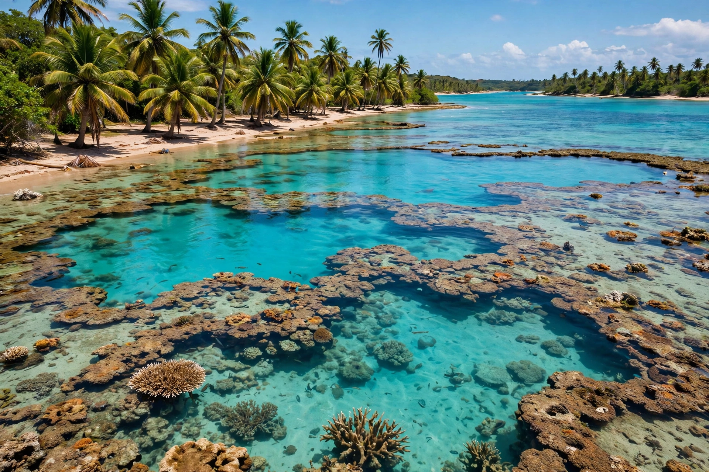

| Alagoas | |
 | |
| Country | Brazil |
|---|---|
| Capital | Maceió |
| Area | 27,768 km² |
| Population | about 3.1 million |
| Region | Northeast |
Alagoas is a small coastal state in northeastern Brazil, bordered by Pernambuco to the north, Sergipe to the south, and Bahia to the southwest, with the São Francisco River forming much of its southern boundary. Its capital is Maceió.
The territory was contested by the Portuguese and the Dutch, who occupied parts of the Brazilian northeast in the 17th century. Alagoas is famous as the site of Palmares, the great quilombo (settlement of escaped enslaved Africans) led by Zumbi, which resisted Portuguese and Dutch attacks for much of the 17th century before its destruction in 1694. Alagoas became a separate captaincy in 1817 and a province, then state, of Brazil. Brazil's first two presidents, Deodoro da Fonseca and Floriano Peixoto, were born in Alagoas.
The state takes its name from its many lagoons (lagoas), including the Mundaú and Manguaba lagoons near the capital. Its coast is lined with coral reefs, natural pools and coconut groves, making tourism a growing industry at resorts such as Maragogi. Sugarcane remains the dominant crop, alongside a significant chemical industry based on rock salt and brine.